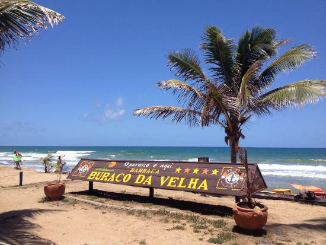
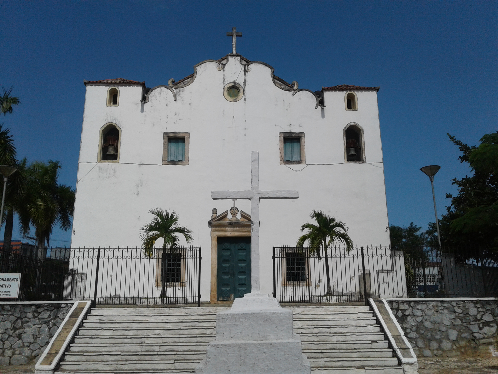

DESDE 31 DE JULHO DE 1962
Habitantes
Bairros Oficiais
Economia da Bahia
De Orla Marítima
Fundação de Lauro de Freitas

O melhor banho de mar da região. Piscinas naturais cristalinas perfeitas para a família.
Ver no MapaModernidade e lazer completo. O centro de compras que transformou a Estrada do Coco.
Ver no Mapa